Each pet is one WebP sheet, 8 columns × 10 rows, 80 frames, 3.77 s.
Frame 0 is the closed state (the picture through pixel blocks with the full
ASCII layer over it); the last frame is the true PNG and is held.
Two animations run: left 0 → −700% in
steps(8, jump-none) over 0.377 s, repeated 10×, and
top 0 → −900% in steps(10, jump-none) over
3.77 s. No script. The small square beside each is
KEY-closed.webp at 140 px — what an unfocused neighbour shows.
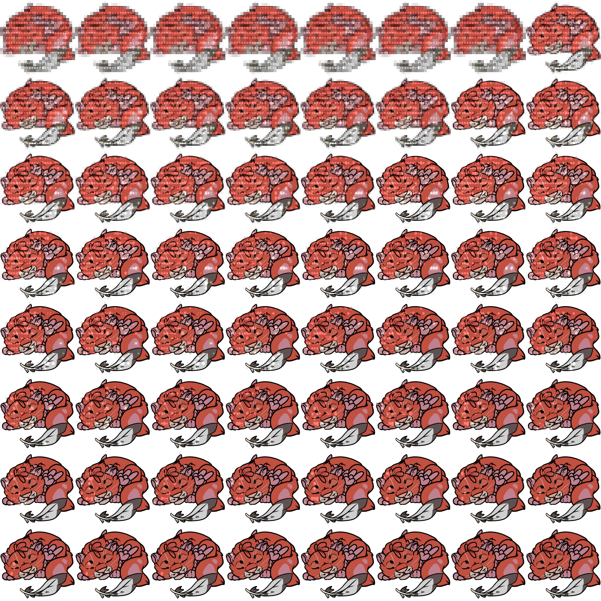
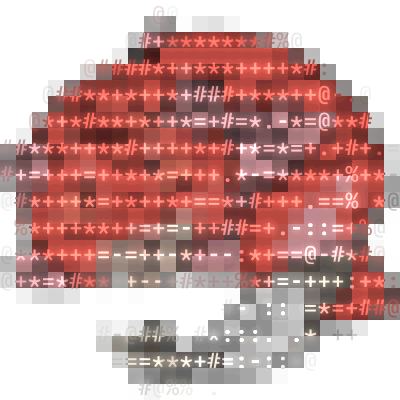
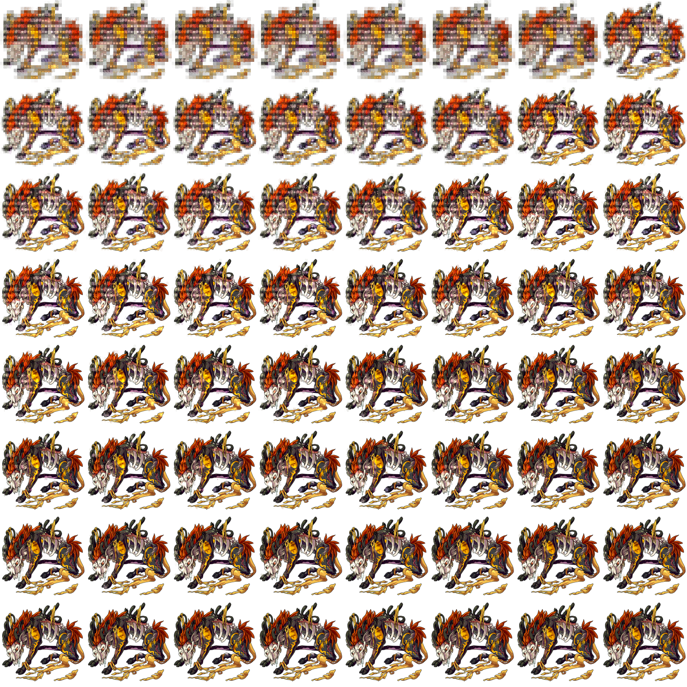
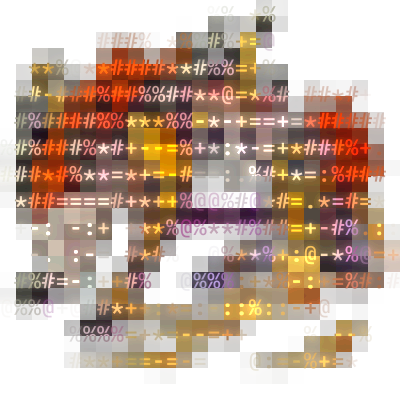
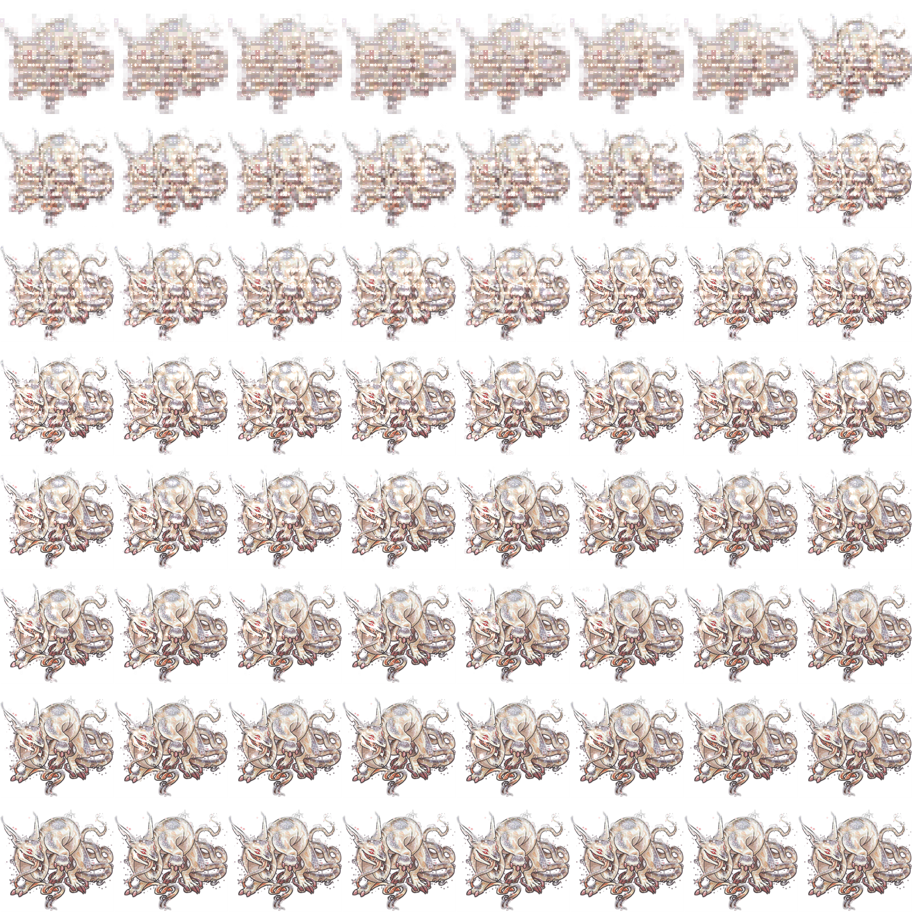
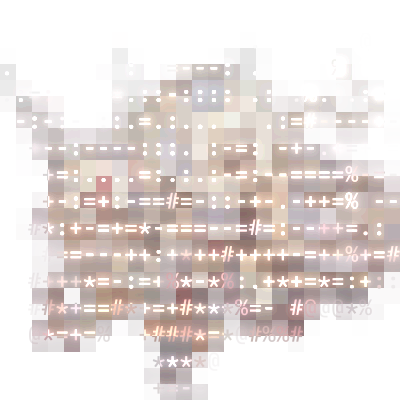
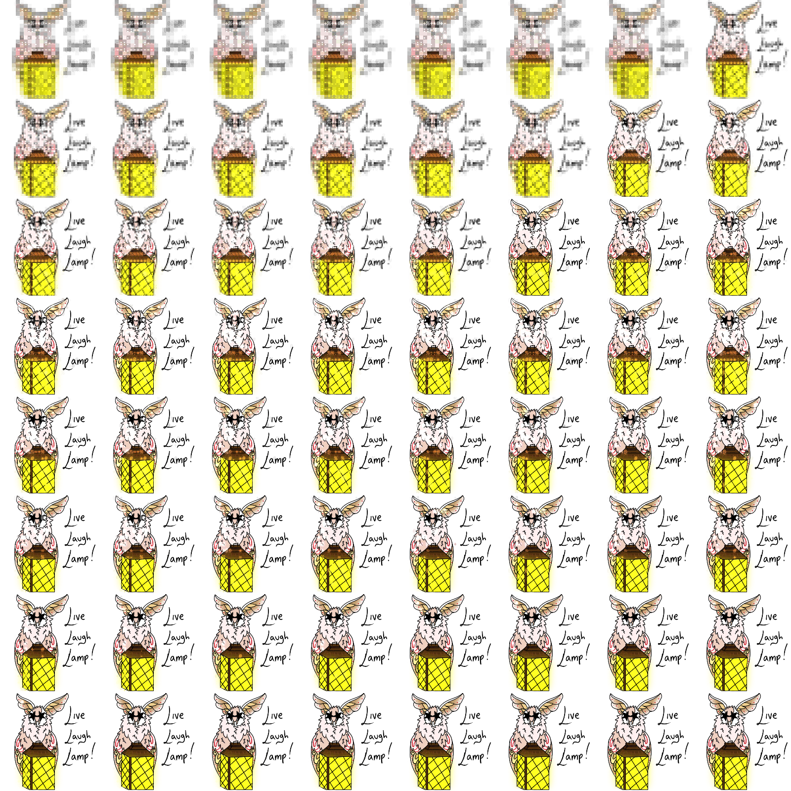
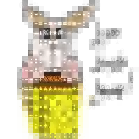
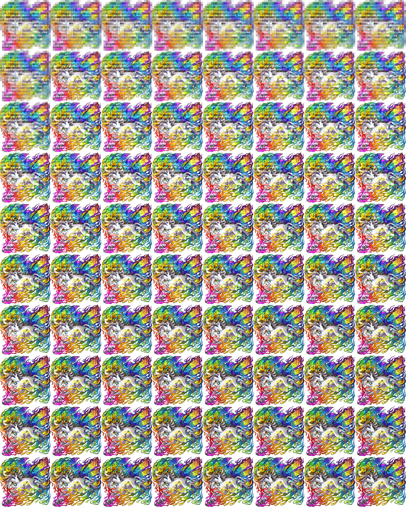
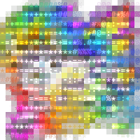
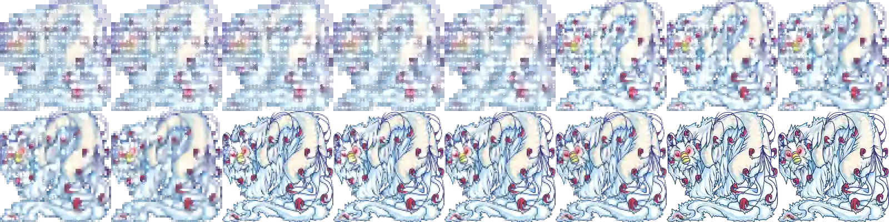
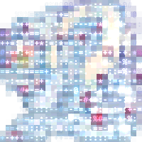
The whole of it, to paste. --frame is the box; everything
else comes straight out of manifest.json.
.stage{ position:relative; width:200px; height:200px; overflow:hidden; }
.sheet{
position:absolute; left:0; top:0;
width:800%; /* COLS * 100% */
height:1000%; /* ROWS * 100% */
max-width:none;
animation:
reveal-col 0.377s steps(8, jump-none) 10 forwards, /* run / ROWS, ROWS times */
reveal-row 3.77s steps(10, jump-none) 1 forwards; /* run */
}
@keyframes reveal-col{ from{ left:0 } to{ left:-700% } } /* -(COLS-1)*100% */
@keyframes reveal-row{ from{ top:0 } to{ top:-900% } } /* -(ROWS-1)*100% */
@media (prefers-reduced-motion: reduce){
.sheet{ animation:none; left:-700%; top:-900% } /* hold the true image */
}
/* KEY-close.webp, the optional "losing focus" sheet: 24 frames, 8 x 3, 0.95 s.
Same two animations with its own numbers - it ENDS on the closed state. */
.sheet.closing{
height:300%; /* its ROWS * 100% */
animation:
close-col 0.3167s steps(8, jump-none) 3 forwards, /* 0.95 / 3 */
close-row 0.95s steps(3, jump-none) 1 forwards;
}
@keyframes close-col{ from{ left:0 } to{ left:-700% } }
@keyframes close-row{ from{ top:0 } to{ top:-200% } }